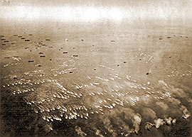

|
j
a v a s c r i p t |
October 20, 1944

Better Leyte than Never
Blunted by the Great Formosa Propaganda Offensive, the landing in Leyte failed to make the stir I expected. It was almost an anti-climax to the recent air raids. The news had already been discounted. Everyone acted blasé, saying things like: "Of course I expected it, didn't you?" Drinks were had and cigars passed out (at P40 a stick, no less). Most had expected MacArthur to make a bigger splash, not slip in as calmly and unobtrusively as he did. A few spoke of hiring bancas and going to Leyte to fight. The Japanese were roundly ridiculed all day. The landing met with universal approval. 'Best spot to land,' was the belief (Leyte and Samar are guerilla hotbeds). At one shot it put Mindanao under MacArthur's thumb and Luzon within easy reach. The fact is, almost everybody was predicting a landing at the end of the month when the moon was out. MacArthur surprised us by just ten days. "That guy sure has got brains — didn't he land at the time we said he should?" And so today over this entire archipelago, there are profound, sincere and thankful sighs of relief. At last the great day is at hand. It sneaked up on us to be sure, without ballyhoo, celebration or fireworks. And you'd hardly think a war was on if you were seated beside me now, looking out at the evening sun beginning to slip below the horizon, protesting at the encroaching darkness by streaking gold, crimson and red splotches in the sky. Now that I think of it, there's a basic solemn reason for the quiet welcome extended to the news: The realization that we ourselves, in Luzon, may have to do a little hard penance soon, before the final absolution washes us clean for the great dawn of freedom. I've been glued to the radio for 2-1/2 hours, for what the Filipinos are taking quietly, the Americans are making up for it with an orgy of special announcements, marching songs, flashes, speeches, messages, and details, all interspersed with music. They're playing: We're going back to Bataan, I've heard it five times already — the tune is well imprinted on my mind. Everyone has had a go at a few inspiring words. Australian radio also went to town on the Philippine Radio Hour: Attention Philippine Listeners ... attention. Keep tuned to this station for important news of your liberation. American and Filipino forces under MacArthur have landed in Leyte. The successful landing has begun the fight to rid the invaders from Philippine soil. The Tribune could only say that "Japanese Army, Navy Units" were attacking in Leyte. The focus is still on Formosa: "Daihon-ei will soon announce names of U.S. carriers blasted." They never will. La Vanguardia didn't even mention Leyte at all. |
|
|
|
|